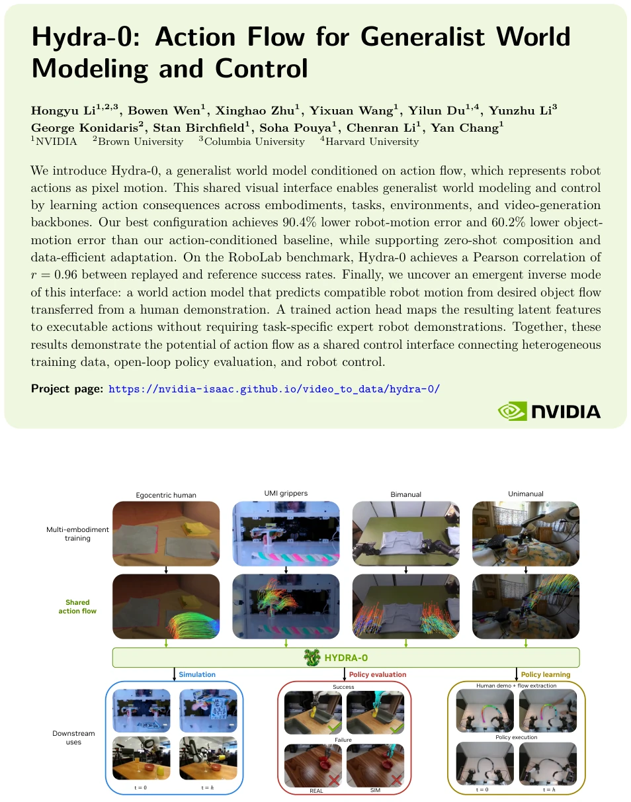
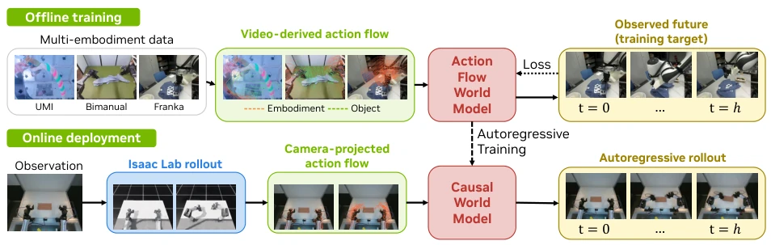
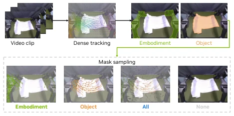
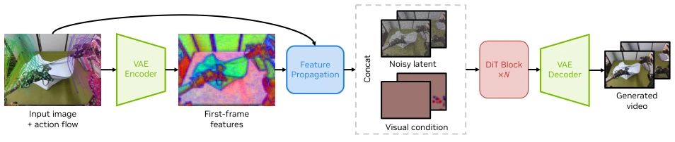
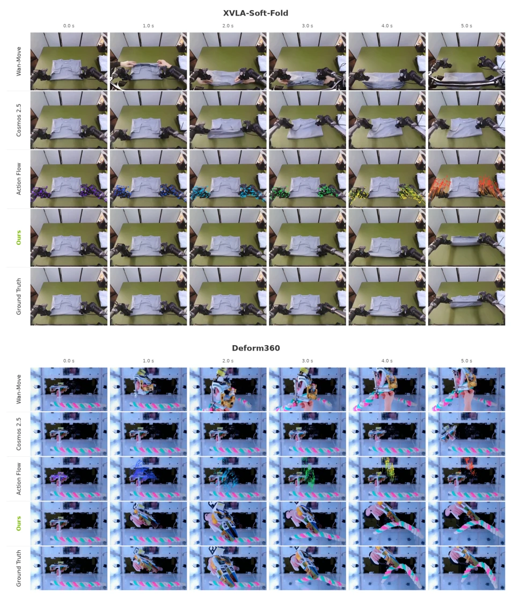
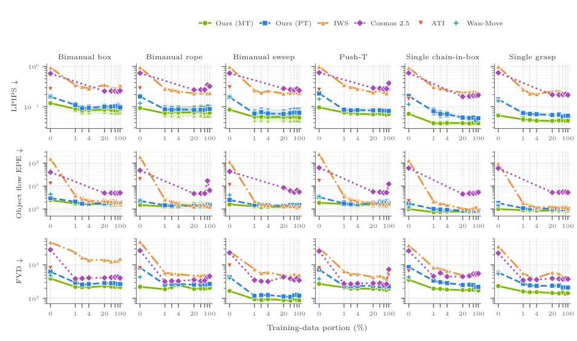
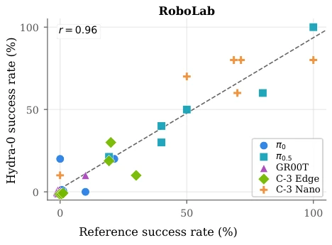
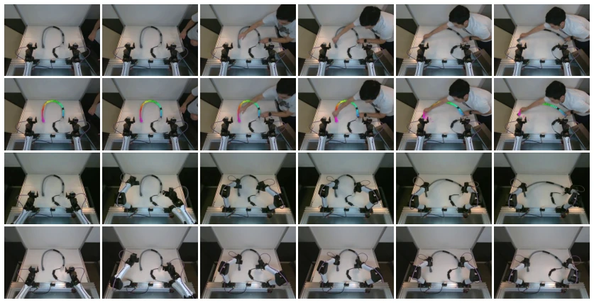
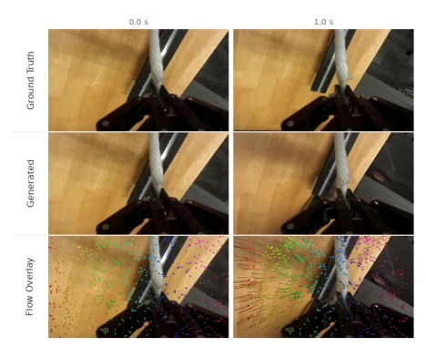
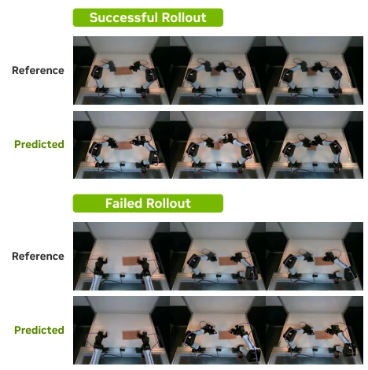

Hydra-0 attempts to unify all things using "Action Flow", converting robot joint actions into pixel motion; this strategy is quite clever, given that all beings are equal before pixels. However, deployment still relies on Isaac Lab simulation to generate flows; what if the calibration error on the physical robot is too large? The Inverse mode infers robot actions from human demonstrations, sounding like magic, but currently remains a Proof-of-Concept. The baseline Cosmos 2.5 was significantly outperformed, with errors reduced by 90%, which is indeed formidable. However, the black-box nature of the video generation model itself, combined with its dependency on simulation data, leaves the term "general" open to question.
Existing world models are mostly tied to specific embodiments, such as joint space or end-effector commands; changing robots requires retraining. Literature [48, 36, 19, 58, 47, 46] points out that this dependency limits transfer. Because under different kinematic structures, the same end-effector commands may produce different joint trajectories and visible link motions, causing video models to learn embodiment-dependent mappings. Although [17, 45, 13] attempted to use image plane motion as conditions, how to implement this as executable commands remains a blank. Hydra-0 aims to fill this gap, allowing different robots, tasks, and environments to share a set of visual interfaces.

Figure 1: Action flow as a shared control interface. Top: Hydra-0 learns from diverse interaction videos featuring egocentric human demonstrations, handheld UMI grippers, bimanual robot arms, and single-arm robots. Middle: Visible embodiment motion is represented as image-plane flow trajectories, placing heterogeneous interactions in a common, pixel-aligned action flow space independent of embodiment-specific joint or end-effector coordinates. This unified interface enables a single generalist world model to learn from multi-embodiment data and transfer across interaction settings. Bottom: In forward mode, provided gripper flow conditions future scene prediction, whose rollouts support open-loop policy evaluation; in inverse mode, desired object flow elicits compatible robot motion that a
方法Method
核心是 Action Flow，即图像平面的轨迹。构建分几何感知（用仿真/标定）和视频驱动（用跟踪器）。训练时用 Flow-matching，将轨迹特征传播到潜在空间。部署分正向（预测视频）和逆向（从物体流反推动作）。逆向模式加了一个 Action Head，把潜在特征解码为动作。为了加速，用了自回归转换和蒸馏。具体而言，几何感知模式下，利用机器人几何和相机标定，将机器人表面点投影到图像平面生成轨迹；视频驱动模式则通过跟踪器恢复轨迹。训练时采用四种采样策略（Embodiment, Object, All, None）增强鲁棒性。正向预测中，动作流作为视觉条件输入 DiT 骨干网络；逆向控制中，模型根据期望物体流生成兼容的机器人运动，再通过 Action Head 映射为可执行动作。此外，结合自回归转换与 DMD2 蒸馏，显著提升了推理速度。
The core is Action Flow, i.e., trajectories on the image plane. Construction is divided into geometric perception (using simulation/calibration) and video-driven (using trackers). During training, Flow-matching is used to propagate trajectory features into the latent space. Deployment is divided into forward (predicting video) and inverse (inferring actions from object flow). The inverse mode adds an Action Head to decode latent features into actions. To accelerate, autoregressive conversion and distillation are used. Specifically, in geometric perception mode, using robot geometry and camera calibration, robot surface points are projected onto the image plane to generate trajectories; video-driven mode recovers trajectories through trackers. Four sampling strategies (Embodiment, Object, All, None) are adopted during training to enhance robustness. In forward prediction, action flow is input as a visual condition into the DiT backbone network; in inverse control, the model generates compatible robot motion based on expected object flow, then maps it to executable actions via the Action Head. Additionally, combining autoregressive conversion with DMD2 distillation significantly improves inference speed.

Figure 2: Overview of Hydra-0. During offline training (top), we recover action flow from interaction videos by tracking both the embodiment and the manipulated object, as detailed in Section 2.1. The future video is encoded to construct the flow-matching training target. During online deployment (bottom), Isaac Lab executes a candidate command sequence a0:𝐻−1 through the robot controller and physics simulation, producing robot link transforms over the prediction horizon. Using these transforms, we propagate visible robot-surface points and project them through the calibrated camera following Equation (1), producing embodiment action flow that conditions the causal autoregressive model to predict the command sequence’s real-world consequence.

Figure 3: Action Flow Construction and Sampling. Dataset videos without geometric information are tracked densely and grounded into embodiment and manipulated-object masks. During training, we sample an input condition from four conditioning modes: Embodiment selects acting-body tracks as the primary action condition; Object supplies task or desired-motion flow; All provides a grounding fallback; and None provides conditioning dropout.

Figure 4: Action Flow as Visual Conditioning. Action-flow trajectories propagate first-frame latent features through time to form the motion-aware visual condition 𝐶motion. This condition is concatenated with the noisy video latent 𝑍𝑡before DiT patch embedding.
Used 7 datasets, including DROID, ABC-130k, etc., focusing on flexible object interaction. Baselines include Cosmos 2.5, Wan-Move, ATI. Metrics include PSNR, EPE, FVD, etc. In results, Hydra-0 reduced robot motion error by 90.4% and object motion by 60.2% compared to the Cosmos 2.5 baseline. RoboLab evaluation success rate correlation coefficient is 0.96. Data efficiency experiments show multi-embodiment pretraining can reduce fine-tuning data, performing better than training from scratch at 0% task data. Additionally, wrist camera ego-motion prediction and real robot control were verified.

Figure 5: Qualitative Evaluation on XVLA-Soft-Fold and Deform360. Each dataset-specific panel shows six synchronized snapshots over the full five-second horizon. From top to bottom, the rows show Wan-Move, fine-tuned Cosmos 2.5, the action-flow conditioning input, our clean generated output, and the matched ground truth. Additional results appear in the appendix.

Figure 7: Data Efficiency on IWS Tasks. Each task reports LPIPS, object-flow endpoint error (EPE), and FVD versus the percentage of task-specific training data. For all metrics, lower is better. Ours (PT) starts from the original Wan2.2 weights, whereas Ours (MT) starts from our multi-embodiment mid-trained checkpoint. Wan-Move and ATI are evaluated zero-shot.

Figure 8: Open-Loop Policy Evaluation with Hydra-0. Each point aggregates 10 trials; dashed lines show least-squares fits. We evaluate 𝜋0 [6], 𝜋0.5 [25], GR00T N1.7 [33], Cosmos-3 Edge, and Cosmos-3 Nano [35] in RoboLab. Legend abbreviations: GR00T denotes GR00T N1.7; C-3 Edge and C-3 Nano denote Cosmos-3 Edge and Cosmos-3 Nano.

Figure 10: Object-Flow-Conditioned Real-Robot Execution. We illustrate the method on a flexible-pipe-bending task. The columns show six matched time steps. From a held-out human demonstration (row 1), we extract the motion of the manipulated object (row 2) in the form of desired object flow. Conditioned on that flow alone, Hydra-0 generates compatible robot motion in row 3. A learned action-output head converts the latent rollout into executable robot actions, yielding the successful execution shown in row 4.
其他图片Other Figures

Figure 6: Wrist-Camera Egomotion Prediction. The first and last synchronized snapshots show frames 0 and 16 of the 17-frame generated clip, corresponding to 0.0 and 1.0 seconds of physical time.

Figure 9: Real-World Open-Loop Policy Evaluation. Qualitative cloth-folding rollouts show the recorded reference trajectory and the corresponding open-loop prediction conditioned on the recorded robot motion.